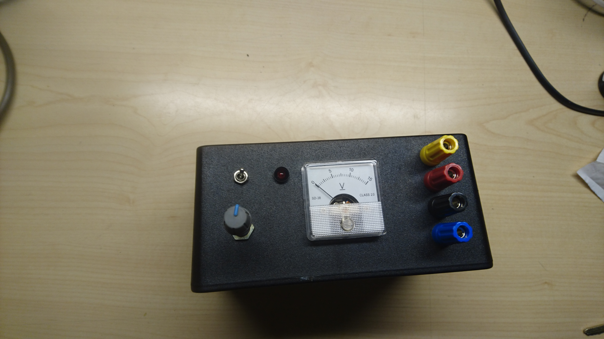
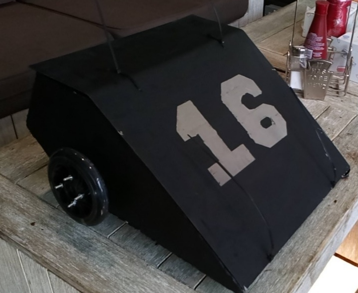

I am a recent Electrical and Electronic Engineering graduate with work experience in the customer service and security field. I possess strong analytical and technical skills gained through creating innovative designs, circuit design, testing tools and power electronic systems. I am a highly driven, optimistic individual with a passion for achieving results. I have gained an expansive set of skills and capabilities which I am able to apply in different environments. I have experience in using software such as MS Suite – Word, Excel, PowerPoint, and Outlook. Further to this I have some experience in CAD and engineering software such as AutoCAD, PCB wizard, google sketch up, livewire, MATLAB/SIMULINK, multisim, LTspice, Proteus 8 and riverbed modeler. As well as experience in programming software such as Dev-C++, Mplab, Quartus Prime, brackets io and microsoft visual code. I am currently a junior developer with codenation.My interests/hobbies include Football, biking, badminton, basketball, boxing, athletics, repairing electronic devices and computer gaming.
 The first image is of a PSU (Power Supply Unit) that was designed during uni. The video is of the testing stage of a robot that was designed as part of a group project at uni. I oversaw the RF frequency communication and the movement of the robot. The last picture is how the robot looked after it was built.